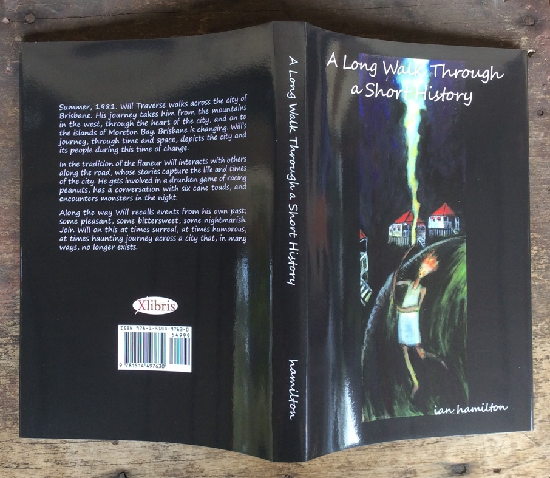
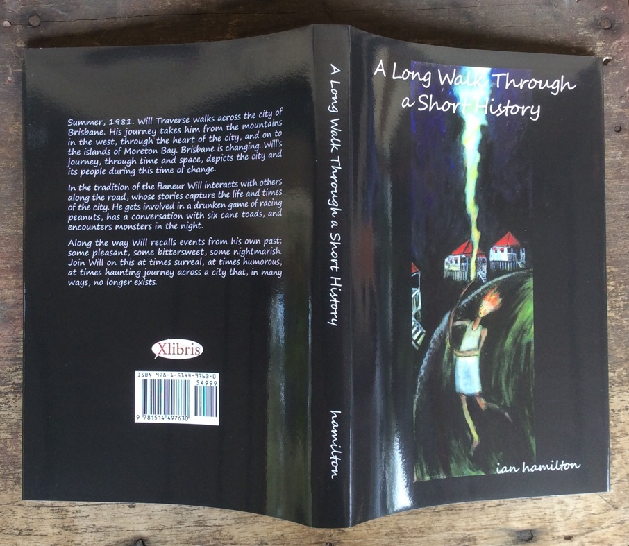
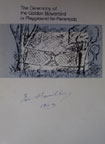
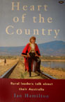
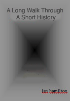
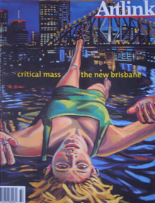
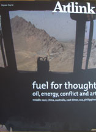

|
Ian Hamilton Published Writings

A Long Walk Through a Short History - Ian Hamilton 2016 Now available from Xlibris
published articles and editorials
related writings - other authors Bowerbirds Mildura Exhibition Bowerbirds Palmer Exhibition 2008
|
Ian Hamilton Published Writings

A Long Walk Through a Short History - Ian Hamilton 2016
Now available from Xlibris

The Ceremony of the Golden Bowerbird
'Experimental Art Foundation, 1983'
copies available from the Experimental Art Foundation, Adelaide
'Wakefield Press, 1996'
copies available from Wakefield Press, Adelaide
A Long Walk Through A Short History
DUE SOON
Author Ian Hamilton has produced a novel that crosses time and space in a unique way in "Meanjin Crossing" (published by Xlibris AU). His portrait of characters from different periods illustrates how changing culture impacts on the lives of individuals.
Will Traverse is a war baby, a Brisbane boy, and in later life a taciturn and solitary retired engineer. But there is another side to Will - romantic, lyrical, and deeply sensitive to the culture of the original inhabitants of this part of SouthEast Queensland. His work on a novel about the impact of the arrival of the Europeans coincides with the unexpected re-kindling of a lost love.
As he and Mary Wright hesitantly rediscover their mutual affection, the long arc of their own story becomes interwoven with Will's emerging novel. Together, the two stories reveal layers of history of the Brisbane region - a metropolis radically transformed again within Will's lifetime. "Meanjin Crossing" ends enigmatically, a mix of sadness and hope, and certainty that the story is not over.
Michael Jacobs, Adelaide.Meanjin Crossing is the best kind of ghost story, sifting layers of memory and geography to create a palpable sense of the people and places that underlie the contemporary landscape. At the heart of this story is a moving evocation of the bora grounds, largely lost to us now, where boys were once transformed into men and culture and knowledge were perpetuated. This is a book that illustrates perfectly the historian Simon Schama's proposition: though it may sometimes seem that our impatient appetite for progress has ground the earth to thin and shifting dust, we need only poke below the subsoil of its surface to discover an obstinately rich loam of memory.
Malcolm McKinnon, MelbourneUnder related writings - Bowerbirds palmer Exhibition 2008 need to put Leo Davis under heading The Observance of form.
published articles and editorials

Editor - Vol 23 No 2, 2003

Editor - Vol 28 No 1, 2008
related writings - other authors Bowerbirds Mildura Exhibition Bowerbirds Palmer Exhibition 2008Palmer Installation 2008